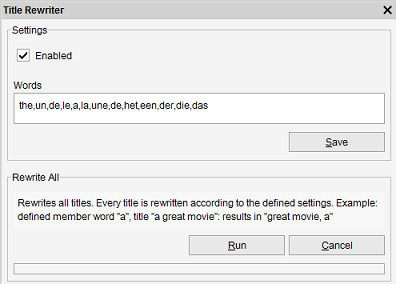

Title Rewriting
Menu path: Tools > Title Rewriter
This tool enables Data Crow to rewrite titles of new items and / or rewrite all titles for all items of this module.

Rewriting titles is preferable for sorting and reporting. Member words can be moved to the back of the title, transforming titles like "the house" and "the tree" to "house, the" and "tree, the"
Enabled
Check the field enabled to rewrite titles for new items (and when updating existing titles). Disable this functionality by unchecking the enabled box (default).
Words
Define the words here. A title starting with one of the entered words (separated by a space) will be rewritten: 'a house', 'house, a'.
You can define multiple words. Separate each word with a comma (,).
Rewrite all titles
Rewrites all titles of all items present in this module